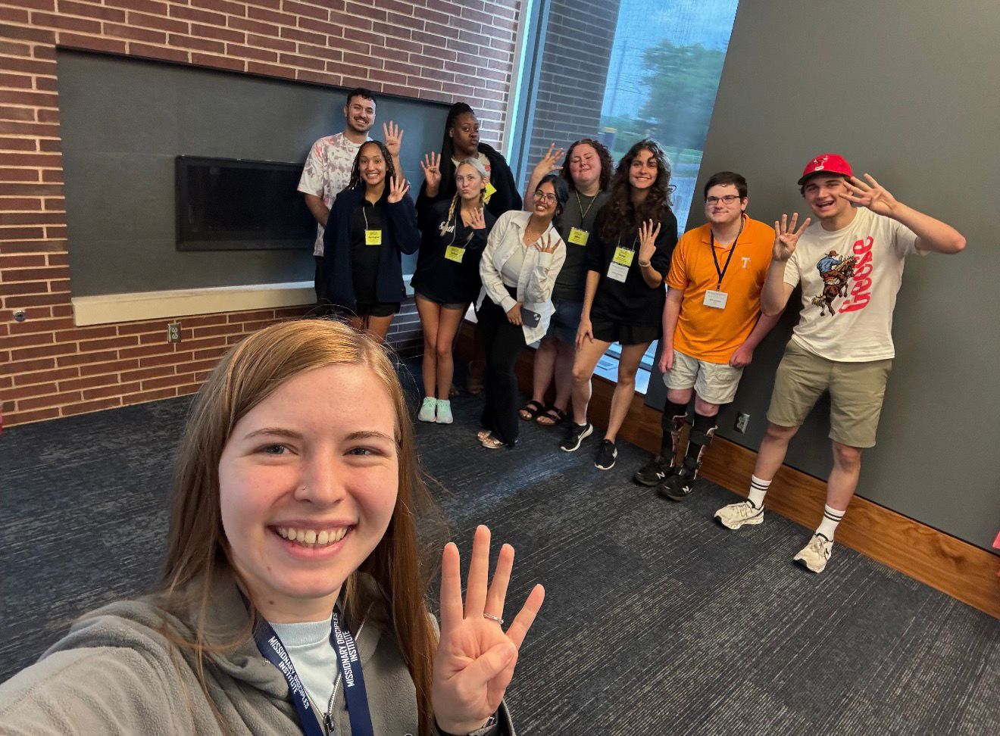
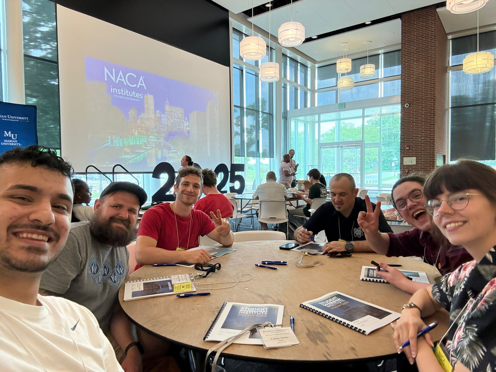
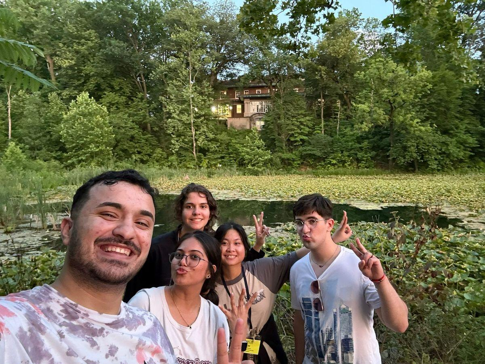

NACA Student Government Institute
Why I signed up
When I first received an email from our Senate advisor, Cole, about the opportunity to join the NACA Student Government Institute, I didn’t hesitate to sign up. As a new senator, I saw it as a perfect chance to build stronger connections with fellow members of my own senate while learning from student leaders—senators, VPs, and presidents—from other schools. I believed that understanding how other student governments operated could help me contribute more effectively to our own.
More importantly, I was eager to hear the voices of international students at other colleges and learn how their campuses support them. My goal was to bring back ideas and solutions that could improve the international student experience at Madison College—both academically and socially.
The conference
The trip was exciting from the start. Our school arranged a minivan for the journey, and I traveled with four other senators, one VP, and our Senate advisor. The 5-hour ride from Wisconsin to Indiana was filled with laughter and bonding. When we arrived at Marian University, the first thing I noticed was how beautiful and clean the campus was. The presence of chapels and religious symbols clearly showed its identity as a faith-based institution, and I’ve always found joy in learning about different cultures and religions.
Over three days, we experienced a well-organized and engaging conference. The meals provided were delicious and diverse. We were also placed into groups to interact with student leaders from different colleges. I was in Group 4, and we bonded quickly. Our team even won first place in a talent competition among the groups!
One of the most impactful experiences was the campaign workshop. Each group was tasked with creating a campaign to address campus issues and outline short-term goals. My group designed the “Your Voice Matters” campaign, which included initiatives like the “I’m Your Senator” program—empowering students to understand their rights and connect with their representatives. This quick but intense experience taught me a lot about teamwork, advocacy, and strategic planning.
After the conference
After the conference, I went hiking with international students I met at the event. Indiana’s natural beauty and the kindness of its people left a lasting impression on me. I truly hope to return someday.